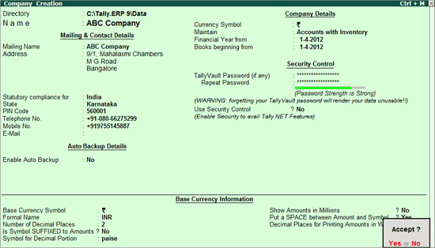
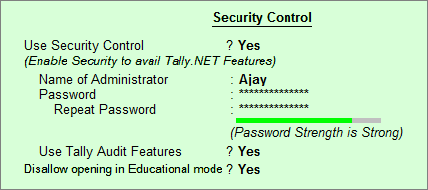

Creating of company
Creating a Company involves providing basic information about the company whose books of accounts are to be maintained in Tally.ERP 9.
Go to Gateway of Tally > (Alt+F3) Company Info. > Create Company
The Company Creation screen appears as shown:

A detailed explanation on each field is given:
Directory
The data path where you want the company to be created is specified in the Directory field.
For example, the default Tally.ERP 9 data directory could be C:\TALLY.ERP\DATA. You may now wish to create a new company on C:\TALLY.ERP\PERSONAL, and some other companies on C:\TALLY.ERP\BRANCHES. The next time, the default directory displays C:\TALLY.ERP\DATA, and if you wish to work on the data of your branches, press Backspace and enter C:\TALLY.ERP\BRANCHES for the directory name. This displays the companies whose data is stored in that location in the List of Companies. You can even give the path of a network server or any other storage device.
Enter the name of the company whose books are being opened. If you are a professional accountant and are maintaining the books of your clients, give the Client Company's name
In addition to the Company Name, Tally.ERP 9 provides the facility to enter the Mailing Name field. It displays the Company Name by default. You may change it as required, if the mailing name is different from the Company Name. The mailing name and address details are picked up for inclusion in any report that needs the company name and address as heading. For example: Balance Sheets, Statement of Accounts, and so on.
Tally.ERP's reports print the mailing name and address as given:
Select the Country from the List of Countries. The Statutory Features and Base Currency Symbol are enabled in accordance with the country selected. For example, if the accounts belong to a company in India, the base currency would be Indian Rupees. The Base Currency will appear with respect to the Country selected.
Selecting India from the List of Countries brings up a State, Pin Code and Telephone No. field.
You can select the appropriate state from the predefined list.
Specify the PIN Code (Postal Index Number) of the specified address.
Enter the Telephone number.
Enter the mobile number of the company.
Enter the E-mail address that will be used to e-mail documents, reports and data from Tally.ERP 9.
Set this to Yes, if you want to enable the automatic backup of Tally.ERP 9 data (per company). Else, set this to No. The data backup is stored in the data folder of the respective company. The auto backup data can be restored by pressing Ctrl+Alt+K from Company Info menu or Gateway of Tally.
Note: Ensure that all the systems in a network have the same date and time settings.
Currency symbol is the symbol of the base currency, that is, the currency that will be used to maintain the books of account.
The symbol ` appears by default in case India for India/SAARC Companies and the field is left blank for International Companies.
Note: The currency symbol changes based on the country selected from the list for Statutory compliance for field.
Tally.ERP 9 displays a drop down for the Type of Company with two options Accounts only and Accounts with Inventory
Select Accounts only if you do not have any inventory transactions (suitable for professionals and corporate offices).
However, at a later date (if required) you can choose to alter the information as Accounts-with-Inventory. Select Accounts-with-Inventory, to maintain both financial accounts and inventory.
In most countries, the books of accounts of a company are maintained for a stipulated period like, 12 months, 15 months, and so on. This stipulated period is referred to as the Financial Year.
The stipulated period of the financial year is 12 months in most countries. Tally.ERP 9 automatically considers 12 months from the date you give here as the Financial Year.
Tally.ERP 9 presumes that you wish to maintain books from the beginning of the financial year. Hence, Tally.ERP 9 displays the date given in Financial Year From field automatically.
The date for Books beginning from can be changed, in case of companies, which are incorporated in the middle of the year. If your company is new, you can opt to start the books of accounts from the date of actual establishment of the company (date of incorporation) but close books according to the Financial Year as specified by you. Tally.ERP 9 provides the required flexibility in such a case by allowing you to give the date when the books of accounts actually began. Tally.ERP 9 will open books from this date and close as on the last day of the Financial Year.
TallyVault is an enhanced security system, which allows for encryption of the company data. Encryption involves converting normally accessible Tally information into unrecognizable information, which can only be reconverted by authorized persons.
Give a password here and repeat the same in the Repeat field. This basically results in the creation of an encrypted company whose information is not accessible to users other than the password holder.
Use Security Control?
Set this to Yes, if you want to initiate a password-protected system to control access to Tally.ERP 9 data. Else, set this to No.
If you opt for security control, Tally.ERP 9 offers a comprehensive password based access control to different features of Tally.ERP 9 based on authority lists created by the Administrator. For more information refer Data Management in Tally.ERP 9.

Name of Administrator, Password, Repeat
Assuming the Tally Vault Password and Use Security Control is set to Yes enter the Name of Administrator, Password and Repeat in the respective fields.
The currency symbol given earlier in the Company Creation screen is displayed here automatically.
Tally.ERP 9 uses this currency symbol in reports, wherever necessary.
Formal Name is the full name of the currency specified.
The Formal Name for the base currency is set to Indian Rupees for Indian Companies.
The number of decimal places for the base currency is set to 2, by default. However, you have the option of specifying up to 4 decimal places. Indian currency has 2 decimal places whereas certain other countries require 3 decimal places and so on.
For countries, which specify the symbol after the amount (value) – this facility is provided. For example, Yen is specified after the amount (5000 Yen) unlike in India where the symbol is specified before the amount (Rs.5000)
Enter the symbol for decimal portion.
This is useful for companies, which require reporting the financial statements in millions. This is possible only if Allow Multi-Currency is enabled in F11: Accounting Features.
This facility is provided to users who require a space between the amount and the symbol. However, putting a space between the amount and symbol could give an opportunity for misuse incase of cheque printing. Hence, the flexibility to turn this option on and off as required is provided.
You can specify the number of decimal places for printing the amount in words. This number should be equal to or lesser than the number specified in Number of Decimal places field in company creation or currency master screen which will appear in Invoice and Cheque printing screen.
For example, if the currency is expressed up to 3 decimal places, the numeric to be printed in words can be restricted to 2 decimal places.
Note: The Name of the Company, cannot be translated or transliterated but will appear in the Language created.